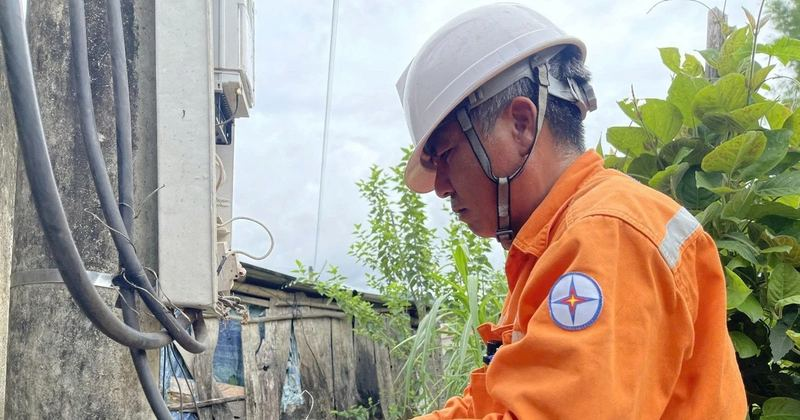

⚡EVNNPC đồng hành cùng Điện Biên phát huy tiềm năng năng lượng, tạo động lực tăng trưởng kinh tế
Khơi thông điểm nghẽn hạ tầng, phát huy tiềm năng năng lượng Điện Biên Là tỉnh miền núi, biên giới có vị trí chiến lược quan trọng tại khu vực Tây Bắc, Điện Biên sở hữu nhiều tiềm năng phát triển thủy điện, điện gió, điệ